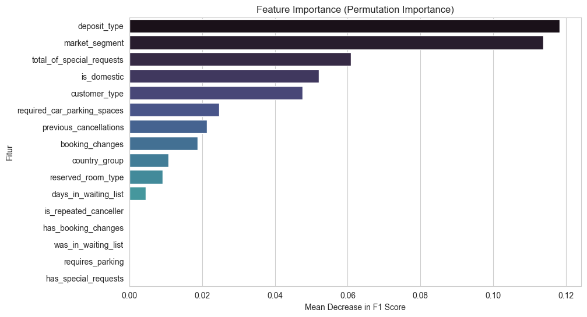
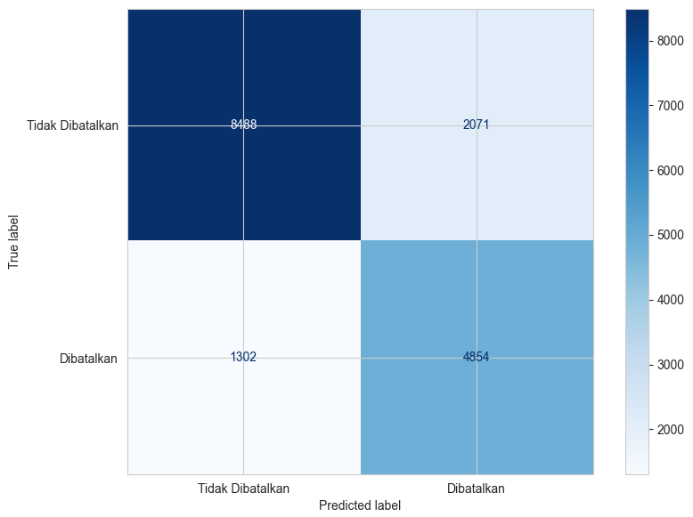
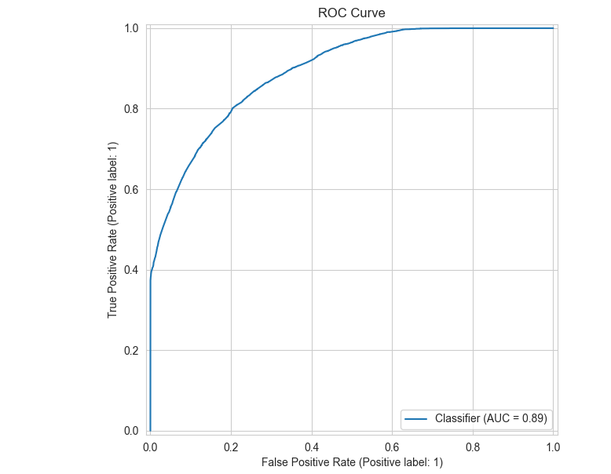
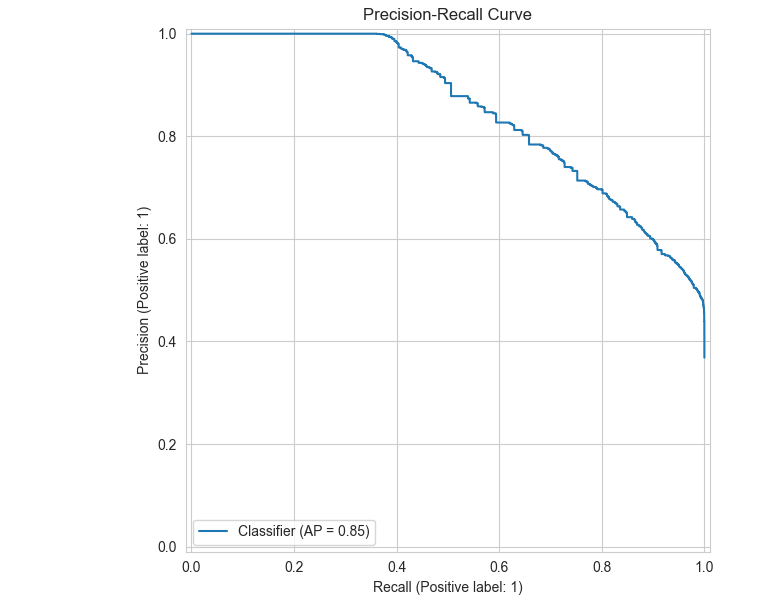

Hotels lose significant revenue when bookings are cancelled at the last minute. With a base cancellation rate of 37% across over 83,573 booking records, the challenge was building a reliable ML classifier that could predict which bookings were likely to cancel — early enough for the hotel to act.
The dataset presented two core challenges: a moderate class imbalance (63% not cancelled, 37% cancelled), and a mix of numerical and categorical features requiring a well-designed preprocessing pipeline before any model could be reliably benchmarked.
Pipeline combining RobustScaler (for numerical features resilient to outliers) and OneHotEncoder for categoricals, ensuring no data leakage between train and test sets.class_weight="balanced" to prevent the model from over-predicting the majority class.HistGradientBoosting outperformed all benchmarks with an F1-score of 0.74 on the held-out test set. Threshold analysis revealed two practical operating points: a threshold of 0.26 for maximum recall (~96%) — useful when the hotel wants to flag every at-risk booking — and a threshold of 0.48 for optimal F1, better suited when false positives have significant operational cost.
Top predictive features: deposit_type and market_segment emerged as the strongest signals, confirming domain intuition that non-refundable deposits and certain booking channels are highly correlated with cancellation likelihood.

deposit_type and market_segment as the dominant cancellation signals.

